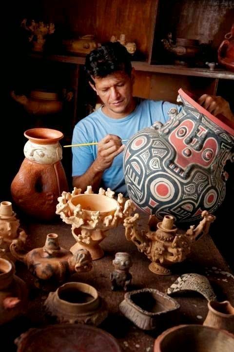
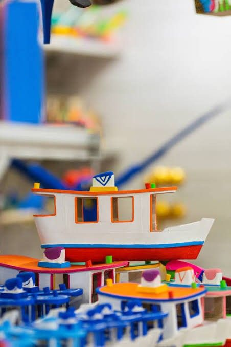
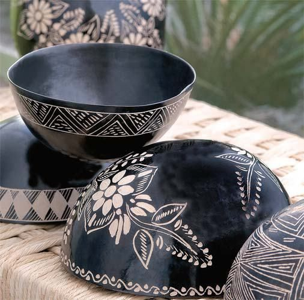
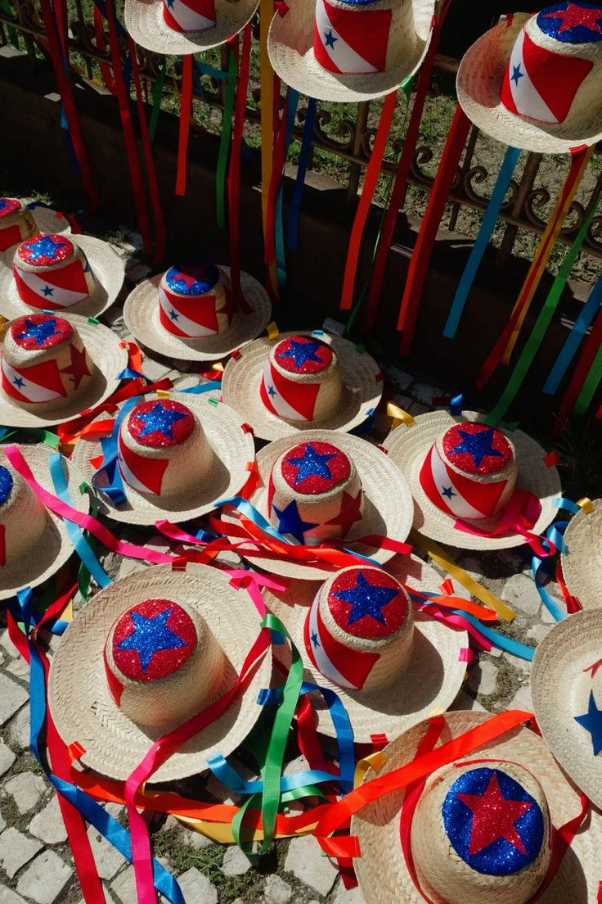

Sobre Nós
Pensada para a exaltação da cultura paraense, a Feirinha Pai d'Égua nasceu como uma vitrine viva do nosso patrimônio.
Somos uma feira virtual feita para conectar você à riqueza das nossas raízes: peças em cerâmica marajoara e tapajônica, biojoias, brinquedos de miriti e diversas manifestações do artesanato caboclo e indígena.
Acreditamos que, assim como nossa cultura deve ser celebrada, cada artesão merece ter seu trabalho reconhecido. O artesanato não é apenas um objeto decorativo — é a história viva do Pará presente no nosso dia a dia.
Nossa Arte & Tradição

Técnica AncestralArtesanato e Pintura Marajoara
Processo de pintura e incisão com grafismos nativos do Pará.

Cultura PopularArtesanato em Miriti
Esculturas leves e coloridas feitas da palmeira do miritizeiro.
Coleção de Peças Tradicionais
Vasos e potes com entalhes geométricos e acabamento em argila.

Utensílio TípicoCuias Gravadas à Mão
Utilizadas no serviço do tacacá e com ornamentações paraenses.

FestividadeChapéus da Pavulagem
Acessórios tradicionais com fitas coloridas e a bandeira do Pará.